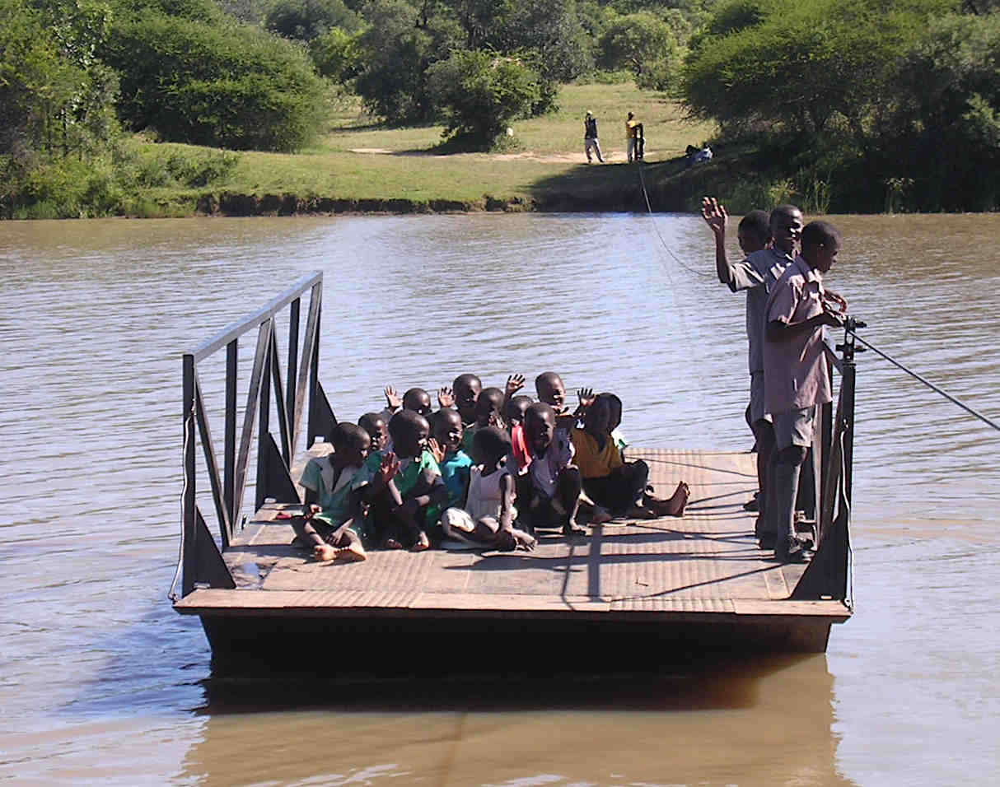
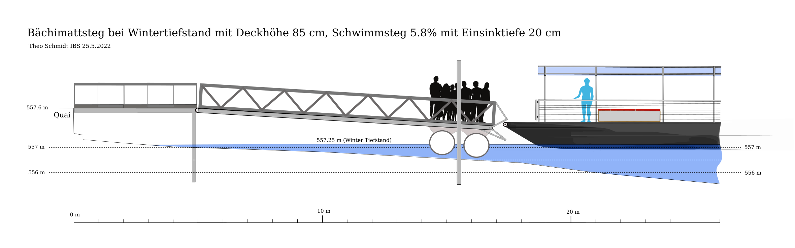
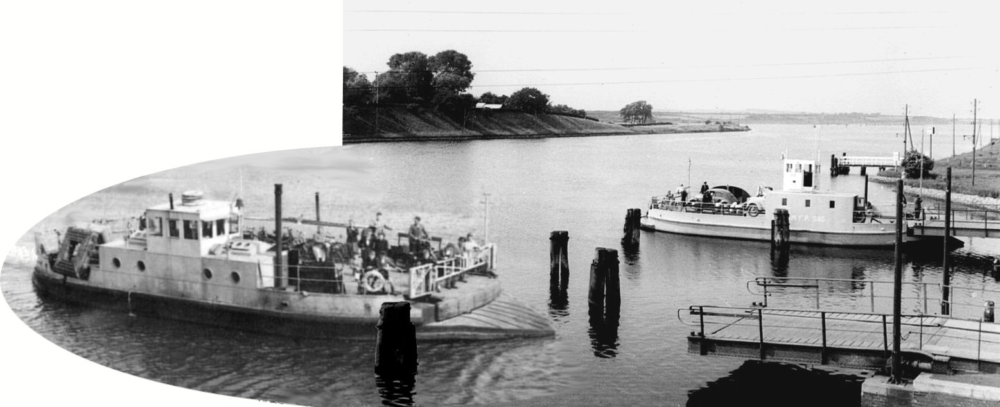
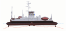
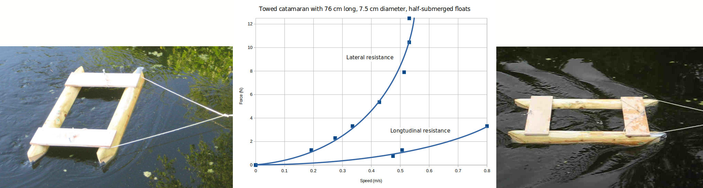
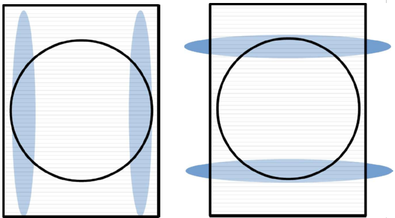
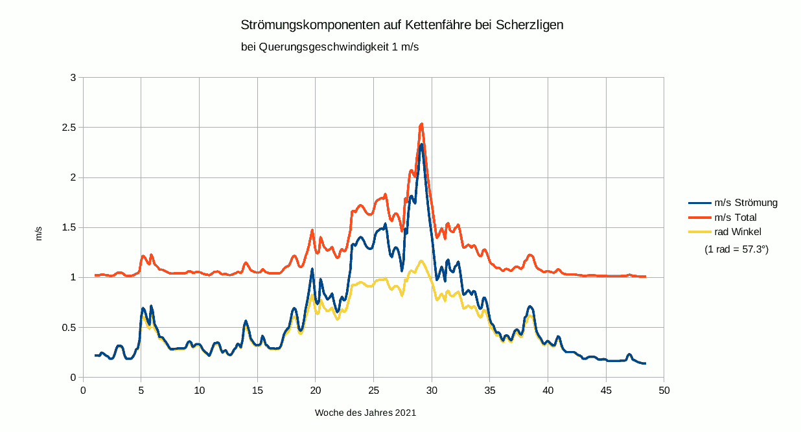
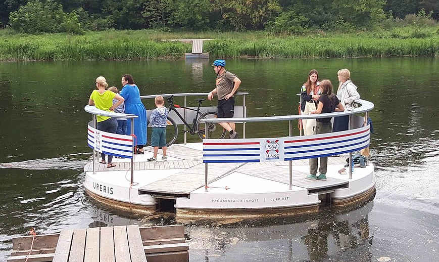

Contents | About | Contact
article 32, issue 14
Efficiency of Cable Ferries - Part 1Theo Schmidt
December 21, 2022
Introduction
This is part one of a three-part series on maximising the efficiency of cable ferries, that is ferries attached to cables which can be chains or ropes. This is an update on the 2016 HPeJ article Human Powered Chain Ferries that shows a number of existing chain ferries. I had started out with these exclusively, having used chain ferries frequently when living in southern England, but I knew no cable ferries using rope, except one small hand ferry at the Exeter Maritime Museum, sadly since disappeared. Part two is on research into chain friction and how to reduce it. Part three will try to identify the conditions advantageous to using chain and those advantageous to using wire rope.

The following describes efforts to initiate a chain ferry service over the river Aare in Thun, Switzerland (see profile showing catenaries at its proposed location 200 m from the northern outflow of Lake Thun), for up to one dozen foot-passengers and bicycles. This is the maximum number of passengers that can be piloted in Switzerland without a permit. Eventually the service is to operate without a pilot like the many small self-service cable ferries in the Netherlands, Belgium and Germany. See for example https://veerponten.nl/type-veren/, going to "Kabelveerpont met handkracht" or especially "Zelfbedienings kabelveerpont" for "hand-powered cable ferries" or "self-service cable ferries". These are mostly human-powered by hand-pulling, sometimes using wooden levers, working a crank or spinning a kind of flywheel.The simplest type of cable ferry is pulled by hand along a stretched rope. This is the most efficient means of slow mass-transport because still water is locally perfectly flat and because the required propulsive power decreases with the third power of the pulling speed to arbitrarily small values. Humans can thus shift enormous loads (dozens of tons are possible) by going slowly enough. (4 people can accelerate and pull a 64-ton barge over 200 m at up to 0.64 m/s.) If the rope or chain sags, extra energy is used for taking up the slack and some of this is returned when approaching the shore, as the weight of the slack part then contributes force in the useful direction. Shown is the Ekusilen Ferry across the river Insiza in Zimbabwe. Photo (public domain) by David Love.
I would have liked to use human power for the Thun location, but it is unrealistic because of the strong summer current of the river Aare and frequent shipping with right-of-way. Direct solar power is also not feasible, as the ferry is to run every day of the year from early morning to late at night. Indirect solar power is possible, that is with a bidirectional mains connection allowing to both charge the battery and feed the mains with any surplus solar energy, so that with sufficient solar cells on a yearly average as much or more energy can be harvested as is consumed by the ferry. This could be augmented with small water-turbine generators, especially as the project involves jetties or piers, rather than slips, which jut out well into the water current. See trampelwurm.ch/IBS/KettenfaehreScherzligen/ for pictures and files of early versions of the project.
Piers instead of slips
Most cable ferries operating in varying water levels use slips for roll-on, roll-off access. The reason for piers here is that Swiss law requires easy access by disabled persons and slips should preferably not be steeper than 6%. At the planned location, the terrain is steeper and on one side there is a quay. Therefore built-up slips would have to be considerable constructions. Piers made of wood or metal require less material and provide more comfortable access, at the cost of more complicated engineering.
The piers are planned in the form of floating docks in order to accommodate the difference in water level between summer and winter, the latter being about 0.65 m lower. As the weight of different numbers of people on the floating dock or at the bow of the ferry can give a step up or down, some means of overcoming this with wheelchairs, etc. is required. Here is a floating dock spreadsheet for working out the sinkage and resulting slope of a hinged floating dock when it is loaded. The values entered correspond to the following drawing except that distributed loading and a center of buoyancy at the very end are assumed (the drawing shows both at 10% hinged length from the end).
This drawing shows a pier with floating dock, depressed by people standing on it, with guides to even it up vertically with the deck of the approaching ferry.
Cable ferries have the advantage that the cable(s) can forcefully pull the ferry against the dock, at the same time securing it and aligning its deck with the dock both horizontally and vertically - as shown above, if suitably provided for by guides or mechanisms. If the water current is always in the same direction and stronger than the wind, a single cable on the upstream side suffices for this. In tidal streams two cables or one central one are required. From 1914 motor chain ferries crossed the Kiel Canal between the North and Baltic Seas, replacing previous hand-pulled rope ferries. They used a single central chain which was entirely submerged except in a central well where it went up to the driven chainwheel. They were themselves replaced by faster free-running motor ferries starting 1953, the last one in 1990.

This photomontage of two historic photos by the German Bundesanstalt Wasserbau shows the way the dozen or so former chain ferries crossing the Kiel Canal docked perfectly by the means of slightly curved decks, wedge-shaped prows and hinged cantilevered piers.

This schematic shows the line of the single chain as used by the Kiel Canal ferries, completely submerged except at the driving chainwheel located in a central well. This photo shows the pulleys normally underwater.
Power requirements of chain ferries
Cable ferries generally need less energy for propulsion than propeller-driven craft of the same size and the installed power of the former can be an order of magnitude smaller than of the latter. This is because a cable ferry going slowly or at rest needs little respectively no propulsive power whereas propeller driven craft then operate at particularly low efficiencies and must have lots of reserve power in order to manoeuvre and cope with strong winds. Cable ferries do not need to manoeuvre, other than stop and change direction, and forces due to wind and current are simply taken up by the chain. However, we will see later that this can cause considerable friction and require additional power.
The above advantage can be shown in practice by comparing the installed engine power between free and cable ferries of similar size. For example, the 22 meter, 22 tonne motor ferry "Luise" on the Wannsee near Berlin has 290 kW installed, while the cable ferry Pritzerbe of similar tonnage, size and construction, has 23 kW installed.
An example of a very low-power installation is also evident in the refurbished chain ferry "Föri" in Turku, Finland. This is in operation since 1904, carrying up to 75 passengers. According to various sources, it used to have a 75 HP diesel installation consuming 7500–8000 liters of fuel each year but was converted in 2017 to battery-supplied twin electric motors. See this below-deck schematic. In summer one motor is used, in winter both if there is ice. In winter "Föri" operates from 6:15 to 21 h, in summer from 6:15 to 23 h, continuously crossing in two minutes and docking for one minute, giving about 400 trips per day. The average power during the day is given as 3 kW in summer and 4 kW in winter. Thus in summer one motor consumes 4.5 kW while moving and in winter both motors each 3 kW. The 57 kWh battery is claimed to be charged only at night, which would be a bit marginal in winter, especially considering auxiliary consumption such as lights. Whether the data is entirely correct or not, it is remarkable.
Although, gathering from the above, a rather low propulsive power is to be expected for the chain ferry in Thun, I wanted to know how much was likely and did a series of towing tests in a pond, using a falling weight from a rooftop attached to a model through a very thin line going through miniature pulleys. I measured the towing speeds in both the (usual) longitudinal and in the lateral orientations. Lorenz Perincioli made a 1:10 scale model from pine, at 4.4 kg and 0.76 m long corresponding to a very well-loaded (4.4 tonnes) full-sized ferry (normal displacement 2.6 t). The following picture shows the model and sums up the measurements.

The towing speed in the left photo is 0.33 m/s. The data for lateral drag (left curve) will become important later in part two of this article. In the right photo the speed is 0.8 m/s. It corresponds to a Froude number of about 0.3, indicating considerable drag due to wave-making, as is apparent in the photo. With the full-sized catamaran a similar wave-pattern would appear at the same Froude number and at a speed which is higher by the square root of the scale-up factor, in this case at about 2.5 m/s. The needed propulsive power for the ferry works out to about 2000 W at this speed, 500 W at 1.5 m/s, and 130 W at 1 m/s. (1 m/s ≈ 1.944 knots)
Therefore the exact speed chosen makes a great deal of difference, as the needed power increases with about the third power of the speed. The use of human power, at least for emergency use in the case of electrical failures, remains a possibility. The mechanical or electrical power needed is higher than the propulsive power as the efficiencies of the chain drive, the motor and electrical system need to be subsequently considered.
For the strong summer flow at the location in Thun, a reaction ferry utilising the water current for propulsion would be ideal technically, but this would require a wire rope with masts high above the shipping, or a floating rope often impeding the shipping. Both would never get permission at this both busy and picturesque listed area. Reaction ferries with submerged cables would be theoretically possible and are discussed in part two, but do not yet exist. Other ideas considered but rejected involved temporarily retractable bridges, underwater rails and conventional motor ferries. (An existing motor ferry already operates, but only a few hours per week.)
So it has to be a powered cable ferry, preferably a chain ferry, where the chain normally lies safely below shipping on the river bottom except at and near the ferry itself. In the working group which had formed for pursuing the project, we were enthusiastic and answered critics worried about the strong current with the argument that the larger chain ferries in southern England worked very well even in strong tidal currents. Accordingly we planned the cheap and cheerful catamaran with cylindrical hulls already introduced, even though the model tests showed considerable lateral resistance, as to be expected. (See trampelwurm.ch/IBS/KettenfaehreScherzligen/Videos/Kettenfaehremodell2.mp4, you may need to go to "Videos" and download manually.) We thought the lateral force due to the river current would simply be held by the chain. Some experiments and a bit of thought later showed that the tension in the chain caused friction in the drive system at every guide or chainwheel it goes around and that overcoming this could require more power than that needed for the forward motion through the water! I will quantify this later in part two but already state a typical finding: in a river current of 1 m/s the envisioned catamaran would need three to five times the propulsive power in order to overcome the chain friction! I also put a small motor on the model and discovered even in still water much friction from the guide and chain wheels. It would only run at all by missing out some of them. See trampelwurm.ch/IBS/KettenfaehreScherzligen/Videos/Modellkettenfaehremotor.webm which shows various configurations and also near the end the chain's inherent shoreward propelling force - a good safety feature. The model also showed that two chains means about twice the friction. We had wanted to use two chains like the large English chain ferries, not having realised that these operate with tidal current from both sides and need two chains for this reason. Other chain ferries mostly use one chain in order to reduce friction and presumably costs.
Reducing drag and friction
The other members of the project group weren't worried by the newly realised friction. "Just use a larger motor" said the project leader. This would, however, quench all ambitions to use predominantly solar power. And even make charging with external power more difficult. There are two modes for charging the ferry's battery from the mains: overnight and/or every time the ferry is stationary at its dedicated pier, if this is equipped with an automatic mains connection. This can be a contact system high enough or shielded enough to prevent accidental human contact, or a low voltage/high current contact system (under 48 V), or a system using contactless induction devices. The former would have to be especially designed and approved, an expensive undertaking. The latter are available for various vehicles such as fork-lift trucks but are limited in voltage and current and sometimes in efficiency.
Therefore it's important to get the lateral resistance from the water current down. Two ways suggest themselves: rotating (yawing) hulls and hulls insensitive to the direction of impinging water flow.
Turntable ferry
A catamaran with the deck and drive on a turntable seems the ultimate solution. Two low-resistance hulls are free to rotate, that is to yaw, so that they can always point into the apparent water current irrespective of the ferry's chain drive and superstructure and the true current or boat speed. When docked the hulls therefore point upriver and when underway are yawed 45° if travelling as fast as the river flow, or yawed more if the crossing speed is greater than the river flow.

Alternatively it would be possible to operate a turntable ferry in reaction mode by setting the rotation angle such as to produce lateral force. This is evaluated in part two, but here are measurements at the planned location in Thun showing a possible feasibility during some summer months.
This diagram shows the estimated current speed (middle blue curve) of the river Aare at the proposed location (derived from official flow measurements) throughout the year 2021. The upper red curve shows the apparent speed at a vessel crossing at a right angle with 1 m/s crossing speed. The bottom yellow curve shows the angle of incidence (in rad) to the direction of crossing. Thus for over ten summer weeks this is around 45° with the flow over 1 m/s.
We all loved this scheme but didn't dare suggest it seriously to the authorities, as they are very hesitant as it is, there being no chain ferries in Switzerland and no rules for them. The normal authority here, the Canton of Bern, refused to have anything to do with the ferry, so it went to the national authorities who normally deal with large conventional vessels.
Hulls with low lateral resistance
As a hull suitable for variable currents must offer low resistance over a wide range of angles of incidence, a round shape like a coracle suggests itself as long as wave-making is of no concern. If it is, making the hull flatter like a dish would give less wave-making, higher stability, but also more skin friction. The following photo shows such a cable ferry, the Uperis, which crosses the river Neris near Vilnius, Lithuania.
Actually a round planform is not required, just gentle angles of entry both longitudinally and laterally. A picture of the hull of the Cowes Floating Bridge shows that the lateral angles of entry seem to be 45°and 30°. See mainstaymarine.co.uk/cowes-to-east-cowes-floating-bridge/ and from this an estimated traverse profile. That even this doesn't seem good enough can be inferred from bbc.com/news/uk-england-hampshire-54449549, where this 2017 chain ferry commissioned by one of the world's most experienced operators is called a "fundamentally flawed design" as it needs push-boats (at £97'000 per year!) for coping with spring tides.
With this in mind this year I did a new series of pond tests with various flat-bottomed models, towing them with a falling weight lengthwise, diagonally and sideways, as I found no literature on the lateral resistances of hulls. Measuring the speed was tried with various methods suitable for short distances and and the best seemed to be putting a video camera on the model and towing this in the different orientations past a grid of known spacing. Examining the 30 frame-per-second video showing the 20 mm grid spacing allowed speed measurements even over fractional-meter distances. As to be expected, decreasing the model's angles of entry and exit from bluff to 45° to 30° and then rounding gave steady improvement.
Part two of this article series will show quantitative chain friction and hull drag calculations and measurements, and present data for turntable reaction chain ferries.
{kind=link}
{kind=link}
{kind=link}